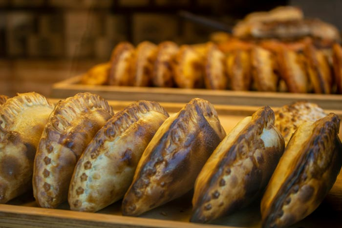
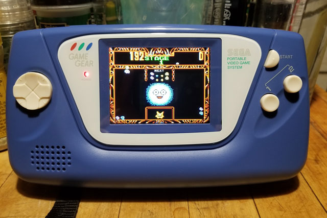
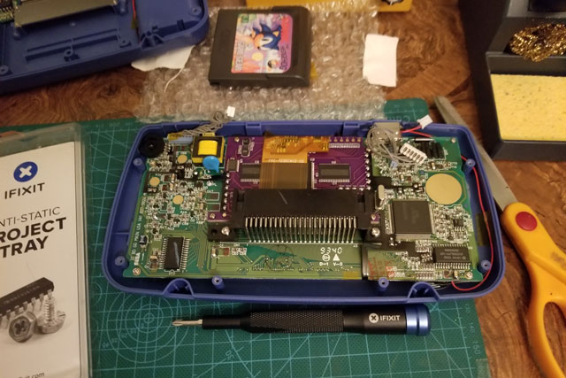
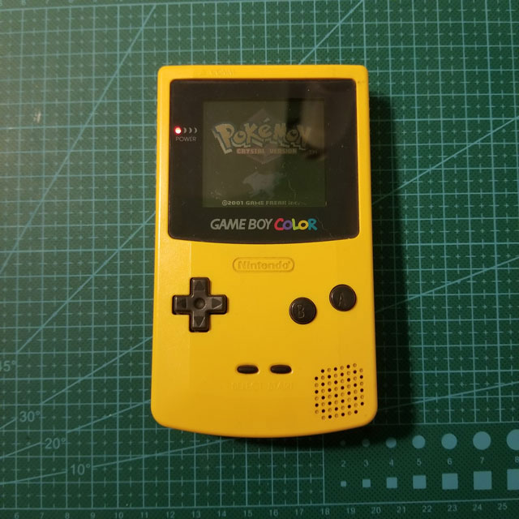
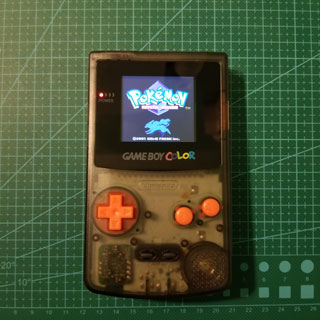
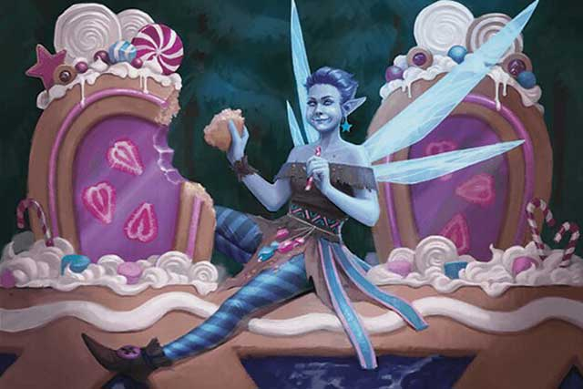
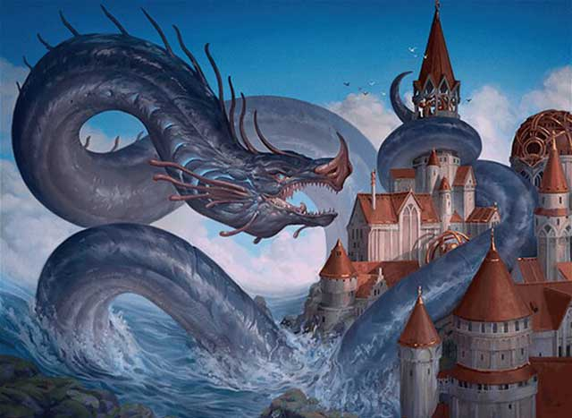
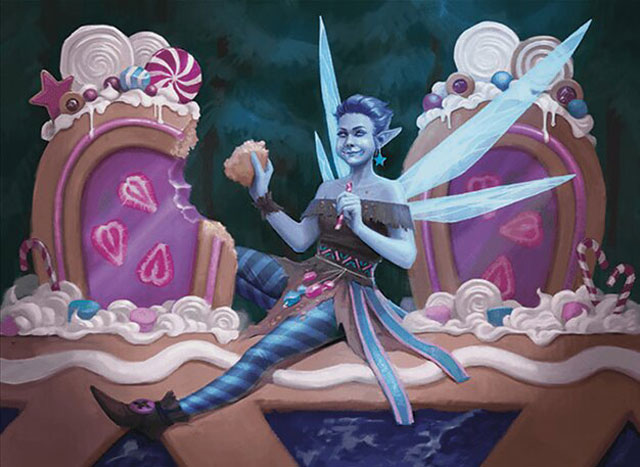

Hobbies
I have a lot of different hobbies that vary from interest to interest but the ones that I have chosen to share show a variety of my skills and interests.
Cooking

Cooking is not only a really fun hobby but it's a great way to feed myself and my family. I enjoy the thrill of cooking and making something new. I not only love the successes but the "happy little accidents" from following a recipe that I have never made before.
I learned how to cook as a teenager, my mom taught me how to make pasta with a can of tomato paste, sauce, sausage, and seasonings. I'm glad she did because the very first time I tried to cook potatoes, I sliced them and the put them into the microwave. Needless to say, I did not eat those potatoes. Here is one of my favorite recipes that I like to share and make. Since I am of Puerto Rican descent, cooking for me is a way to practice my culture.
Recipe: Arroz Con Pollo

This is the first recipe that my father taught me how to cook and it's a staple in my house.
Directions
- Long grain white rice - (1 cup)
- Chicken broth - (2 cups)
- Tomato sauce - (1/2 cup)
- Sofrito - (1/2 cup)
- (1/2) - Onion chopped
- Chicken thighs or breast - (1 lb)
- Cumin adjust to taste - (1/2-1 tsp)
- Salt and pepper to taste
- Olive oil
Instructions
- Step 1
- Wash the chicken and add spices, mix well and Wash the rice and set aside.
- Step 2
- Fry the chicken in a pot until the chicken is brown on both sides, then remove chicken.
- Step 3
- Add sofrito to the pot and cook until fragrent, then add everything else to the pot.
- Step 4
- Add in the water, bring to a boil and cook for 5 minutes.
- Step 5
- Add in chicken and cook for 25 minutes.
- Step 6
- Add fresh cilantro for garnish.
Retro Repair

Growing up in the late 90s, I was a big fan of having several gameboys because they were always fun to play and I could take them anywhere on the go. One of the problems with them was the awful screens. You would have to be glued to a lamp or get an adapter to help illuminate the screens for you to play at night, which is when I got to play as a kid.

A few years ago, I was going through some of my old things in my parent's basement and I found my old gameboy. It bought back so many memories and I wanted to play with it again. Sadly it did not turn on and I decided to look into what I could do to fix it. This turned into a fixation and a hobby.

When doing research on my gameboy that didn't turn on, I disovered that there was a whole world of different repairs and modifications that I could do to give my gameboy color new life. I decided to do the following. 1, Get a new shell and buttons. 2, Install a brand new IPS screen. 3, Install a new speaker. 4, Remove corrosion from the motherboard.

Here is the final result. I am very happy with what I've done and the skills that I have learned.
Magic the Gathering

One of my favorite ways to spend time with friends is to play different games. Out of all of the games that I play is Magic the Gathering. I love playing magic for several reasons, including that it's a very social game and there are very many ways to play.
One of the formats that I play is called Pauper. It's a way of playing Magic on the cheap, only using commons to make up your deck. Not only is it cheap, but since there aren't any huge power imbalances, you can be more stragetic.
One of my favorite decks to play in the format is called Dimir Terror. The playstyle that I use is to counter my opponent, then use my used resources to my advantage. By stoppinmg my opponent with my soceries and instants, I can use those to play bigger creatures that I can use to win.
Sample Deck - Dimir Control


Creatures (10)
- 4 Tolarian Terror
- 2 Gurmag Angler
- 4 Sneaky Snacker
Sorceries (9)
- 3 Ponder
- 2 Deep Analysis
- 4 Lorien Revealed
Instants (24)
- 4 Brainstorm
- 3 Consider
- 4 Counterspell
- 4 Snuff Out
- 2 Spell Pierce
- 4 Though Scour
- 3 Unexpected Fangs
Lands (17)
- 1 Bojuka Bog
- 4 Contaminated Aquifer
- 2 Ice Tunnel
- 11 Island
60 Cards Total